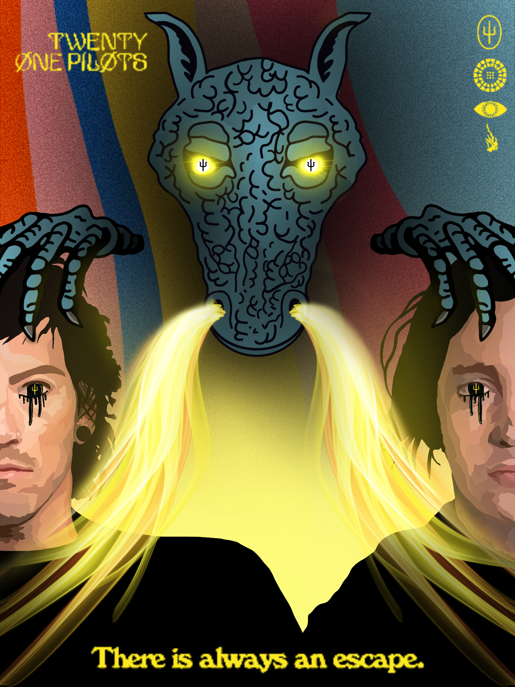
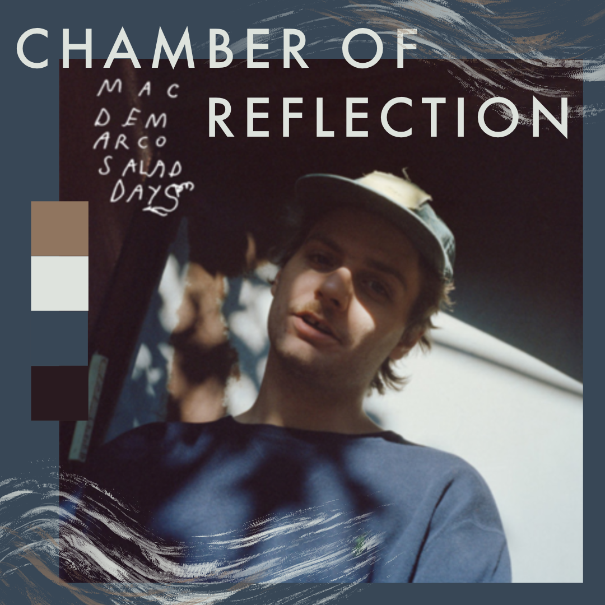
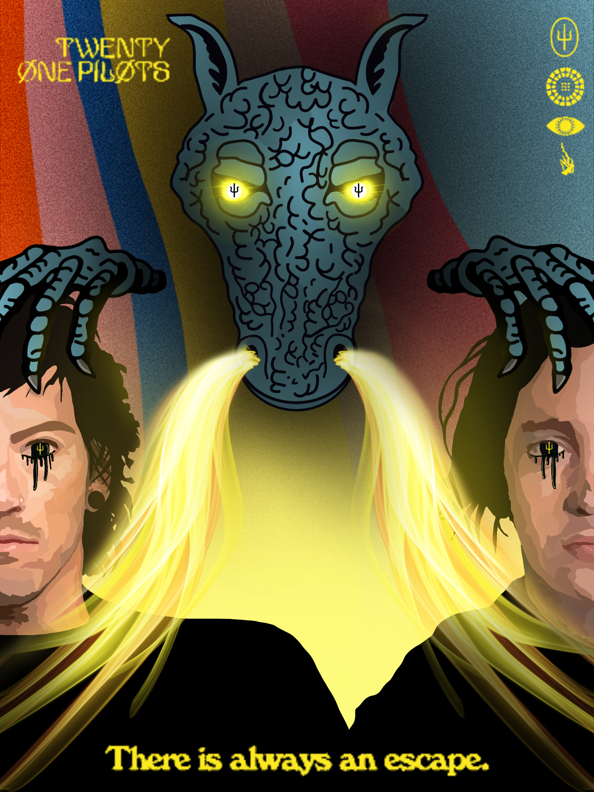
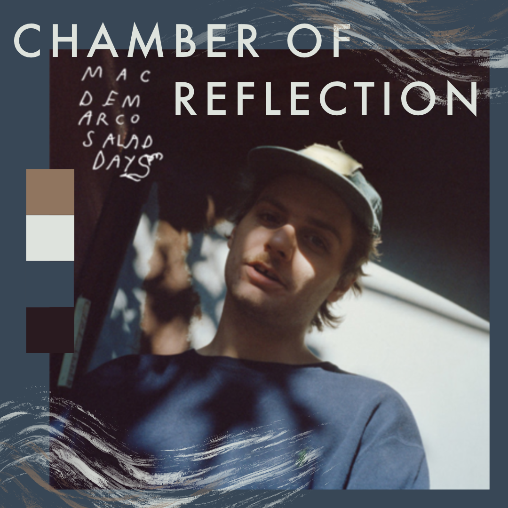
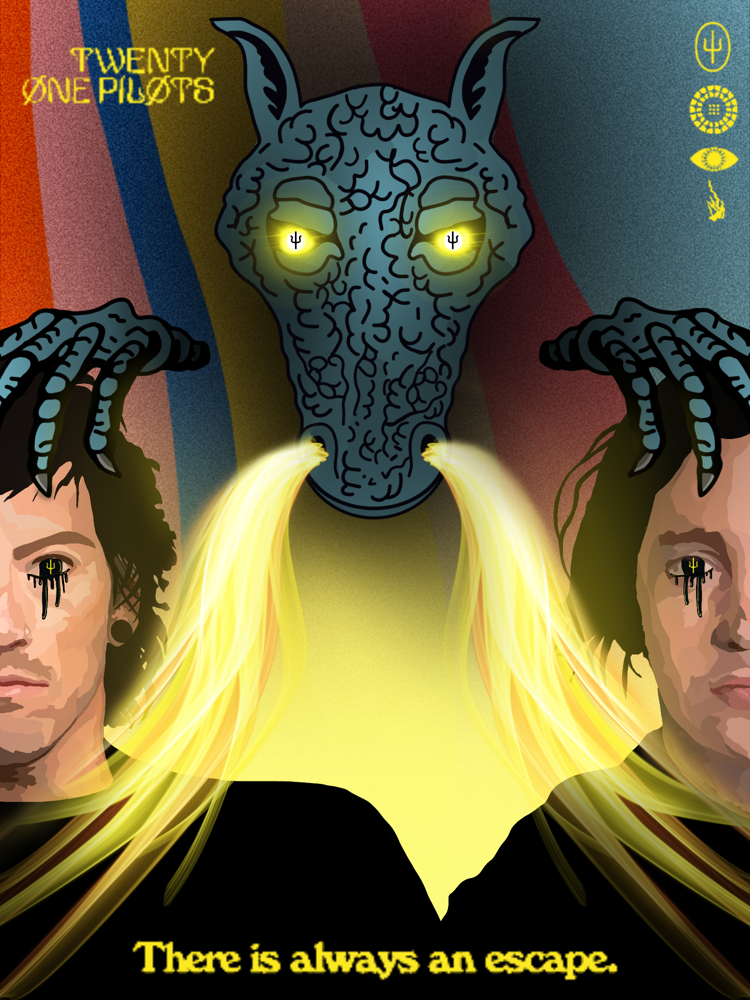
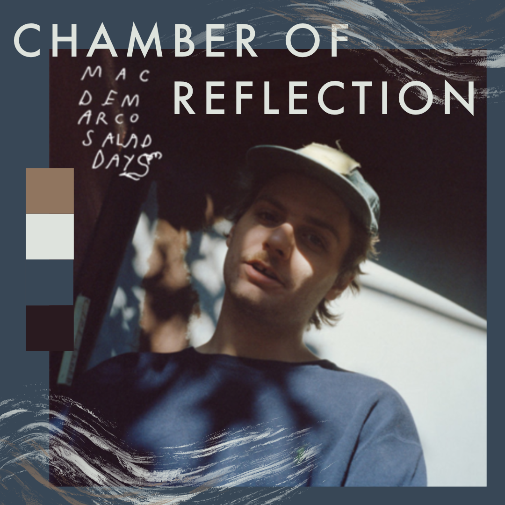

Hello, my name is Ivey Hall and I am a graphic designer located in Central Florida.
I am currently attening college at Seminole State and will be transferring to UCF in the Fall of 2023.
I am currently working towards a degree in Studio Art.
One of my interests that I would love to learn and practice more of is painting and coding.
I have been studying graphic design for six years now and want to dive deeper into more hands on artwork.
I am excited to learn new techniques and create new artwork in the future.
